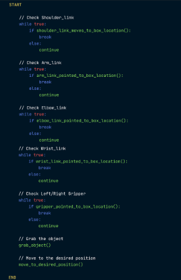
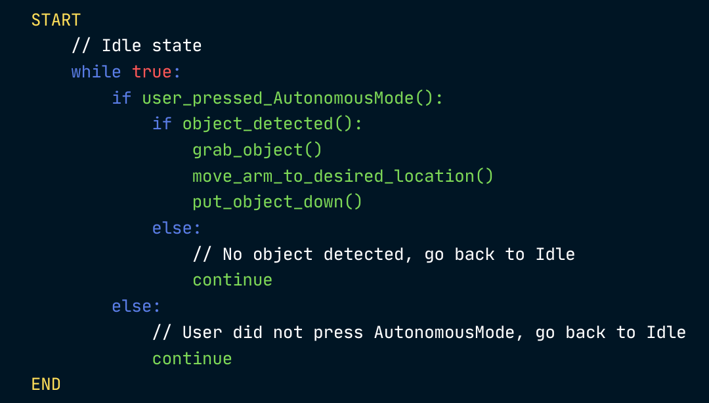
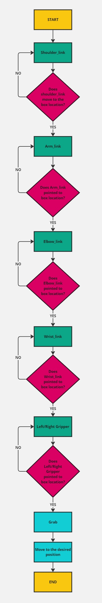
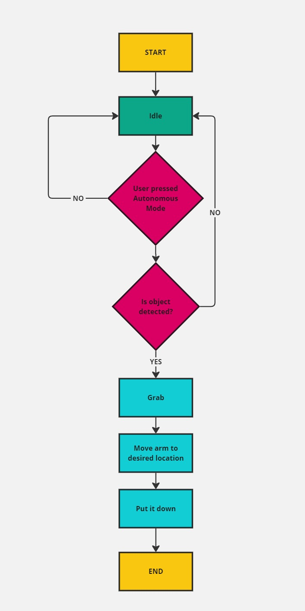

Manual Mode
Autonomous Mode
Flowchart
Manual Mode
Autonomous Mode
Circuit Diagram
This circuit diagram shows the connections for a robotic arm controlled by an Arduino UNO with manual and autonomous modes, integrating multiple servos and a power supply.
Components of Circuit Diagram
-
Arduino UNO Microcontroller: The main controller for the robotic arm.
Servos: Five servos.
Breadboard: Used for organizing and connecting the components.
Power Supply: AAA battery pack to power the servos and Arduino.
Manual Mode
When the project is opened, the user can move the robotic arm using the keys on the keyboard. Commands are sent to the Arduino via serial communication (e.g., USB connection to a PC running Unity Hub). In Unity, a user interface is created to capture keyboard inputs and send corresponding commands to the Arduino, which controls the servos based on user input.
Autonomous Mode
The user presses the 'Autonomous Mode' button in the Unity interface to switch to autonomous operation. The Arduino then executes pre-programmed sequences stored in its memory. These sequences control the servos to perform specific tasks without further user input.